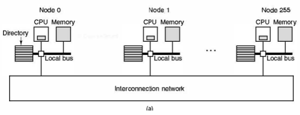
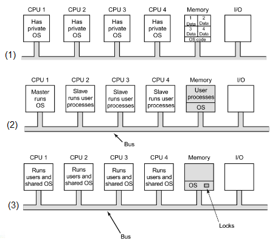
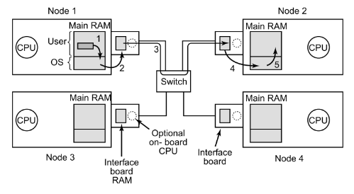
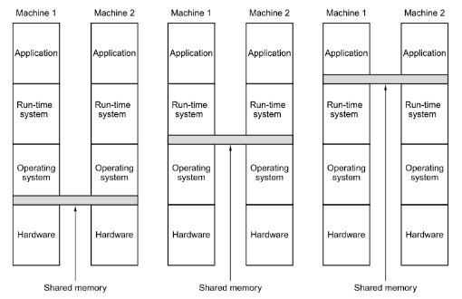
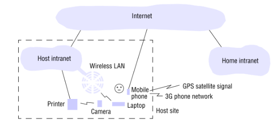

🤓 RESUMO: Sistemas distribuídos 1 💻
Multiprocessador, multicomputador e sistemas distribuídos.
Necessidade de poder computacional
- No passado o foco era no aumento da velocidade de CPUs.
- Necessidade de dispositivos menores.
- Problema: dissipação de calor com dispositivos menores.
- Solução: paralelismo.
- multiprocessador (compartilham memoria)
- multicomputador (uma interface de rede e varios computadores com sua propria memoria)
- sistema distribuído (computadores completos + internet)
Multiprocessadores
- Sistema computacional composto por 2 ou mais processadores que compartilham uma memória em comum.
- Compartilhamento de memória usado como mecanismo de comunicação.
- Um programa executando em qualquer CPU tem seu próprio espaço de endereçamento.
- Condição de corrida entre os diferentes CPU usando a memória.
- S.O. precisa fazer o gerenciamento da arquitetura multiprocessada.
Acesso uniforme à memória
A memória é compartilhada e o tempo de acesso à cpu eh igual pra qualquer processador.

Abordagem baseada em barramento (barramento funciona como um gargalo).

Abordagem baseada em barramentos cruzados.
Acesso não uniforme à memória
Cada processador tem uma memória próxima.
Sistema operacional
(1) Cada processador tem sua própria cópia do seu sistema operacional e a memória é dividida pra cada um dos processadores.
Problemas: balanceamento de carga.
(2) Solução:
- CPU Mestre: sistema operacional (mas também pode funcionar como um gargalo)
- Outras cpus: rodam processos de usuário
(3) SMP: multiprocessadores simétricos. Uma única instância do sistema operacional compartilhada pelas CPUs.
Multicomputadores
- Também conhecido como cluster computers.
- Componente básico: um PC simplificado com interface de rede de alta performance.
- CPUs fortemente acopladas, cada uma com sua própria memória. Geralmente, no mesmo espaço físico.
- Comunicação via passagem de mensagens. Usualmente, transmissão é realizada através de pacotes.
- Mesmo S.O., sistemas de arquivos e uma única administração.
Compartilhamento de memória distribuído
O software pode criar uma interface entre os computadores para compartilhar dados como se fosse uma memória.
Sistemas distribuídos
- Coleção de computadores independentes que aparenta ao usuário com um único sistema correspondente.
- Computadores fracamente acoplados e geograficamente distribuídos.
- Comunicação via passagem de mensagens.
- Exemplo: site de busca, diversos data centers espalhados ao redor do mundo e sistema de armazenamento distribuido que oferece acesso a um grande conjunto de dados.
Objetivos
- Compartilhamento de recursos
- Transparência na distribuição
- Openness – Capacidade do sistema ser estendido e reimplementado de diversas formas
- Segurança
- Escalabilidade
- Dependabilidade
- Concorrência
- Qualidade de Serviço
Redes de computadores
- Sistemas distribuídos são construídos em cima de redes de computadores.
- Duas categorias representativas:
- LAN – Local Area Networks
- WAN – Wide
- Serviços
- Orientado a conexão: para existir comunicação é necessária uma conexão (envia informação com a conexão).
- Não orientado a conexão: não precisa existir a conexão para se comunicar (envia a informação antes da conexão).
Protocolo de redes
- Conjunto de regras que determinam como computadores devem se comunicar.
- Adotam uma pilha de protocolos.
- Application layer (HTTP, FTP, POP).
- Transport layer (TCP, UDP).
- Internet protocol layer (IP).
- Network access layer (ethernet & net card).
- Protocolos representativos da internet:
- IP: protocolo de datagramas.
- TCP (transmission control protocol): usualmente funciona por cima do protocolo IP. Comunicação orientada à conexão.
Computação móvel e ubíqua
Computadores móveis, computadores espalhados em todos os locais.
Cloud computing
Provimento de serviços sem que o cliente precise ter aquilo instalado.